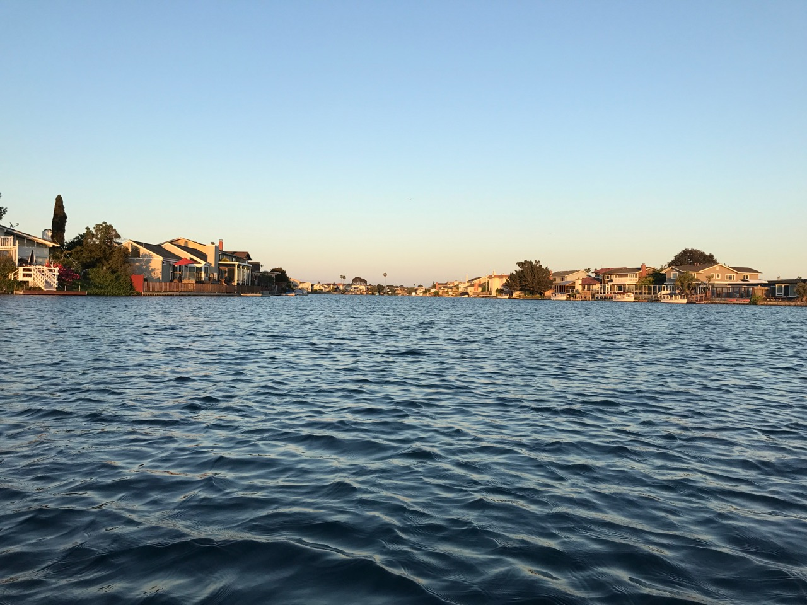

In the summer of 2017, my friends and I bought an inflatable boat to use in the Foster City Lagoon.
The boat was nice, but paddling against wind was a pain. To fix this problem I found a wooden pole in my closet, printed out a motor mount and prop, and created this:
Usually I'd be concerned to put the motor in water due to rust, but with some grease and spinning out of water after each run to dry it out I figured it be fine. The 3d printed prop kept breaking/bending, so thicker and thicker prop designs were used.
With this in mind we tested in the lagoon!
You'd never tell it wasn't part of the boat in the first place.
It handles about 40-50 amps continous with the motor controller at a decent temp. The limiting factor was that the motor being used was fairly high kv, so it couldn't spin up nearly it's design rpm and was limited by current.